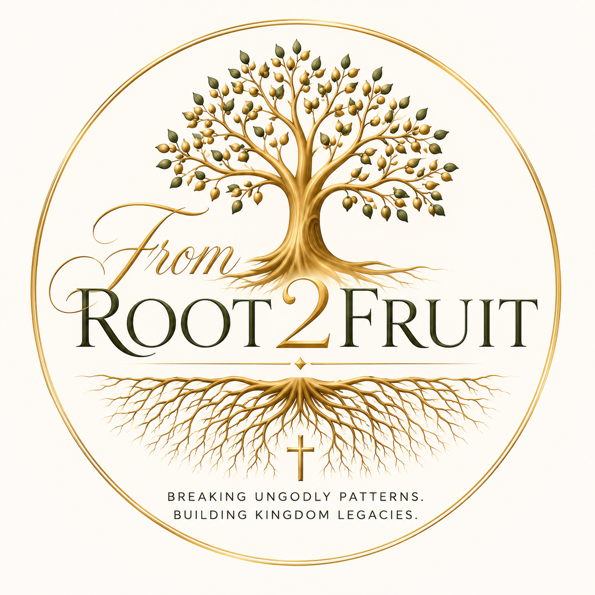

01
Identify the Root
Make room for honest reflection, prayer, and biblical understanding of the patterns shaping your life.

Getting to the root. Renewing the mind. Bearing Kingdom fruit.
FromRoot2Fruit is a Christ-centered ministry dedicated to helping people recognize unhealthy patterns, grow in biblical truth, and cultivate lives that reflect the fruit of the Spirit.
Make room for honest reflection, prayer, and biblical understanding of the patterns shaping your life.
Grow through Scripture, discipleship, and intentional alignment with the truth of God's Word.
Build a legacy of faith, spiritual maturity, and Christ-centered living for generations to come.
FromRoot2Fruit grew from a passion for helping individuals go beyond surface-level change and examine the roots that influence their choices, relationships, and spiritual growth.
Teryne is certified in Discipleship Prayer and is pursuing an associate degree in Psychology, anticipated Spring 2027. Her heart is to encourage people to pursue freedom in Christ, renew their minds through Scripture, and build healthier Kingdom legacies.
Connect With the MinistryA prayerful, Scripture-centered space to seek spiritual encouragement, reflect on patterns, and take intentional steps toward freedom and discipleship in Christ.
Ask About a ConsultationDeliverance prayer and ministry support are voluntary spiritual services, not a replacement for licensed medical or mental-health care. A separate confidential intake form will be linked here when ready.
Through biblical teaching, prayer, and reflection, we explore what it means to abide in Christ, renew our minds, and walk in the authority and love He teaches us.
Learn MoreJoin us as we journey through Scripture, explore biblical wisdom, and discover how God's Word transforms the way we live.
Visit Our YouTube Channel ↗YouTube channel: @fromroot2fruit
Rooted Girls Collective is a vision for empowering girls to grow in confidence, character, purpose, and identity beyond outward appearance.
Camp information and parent/guardian registration will be shared here when enrollment opens.
Ask About Rooted GirlsWe look forward to connecting with you. Visit our YouTube channel for teachings while we prepare our consultation and registration links.
Contact and registration links will be added after they are verified. Please do not submit personal or sensitive information through GitHub.